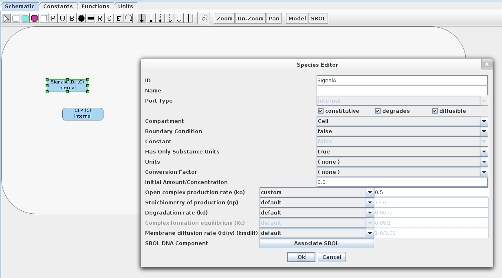
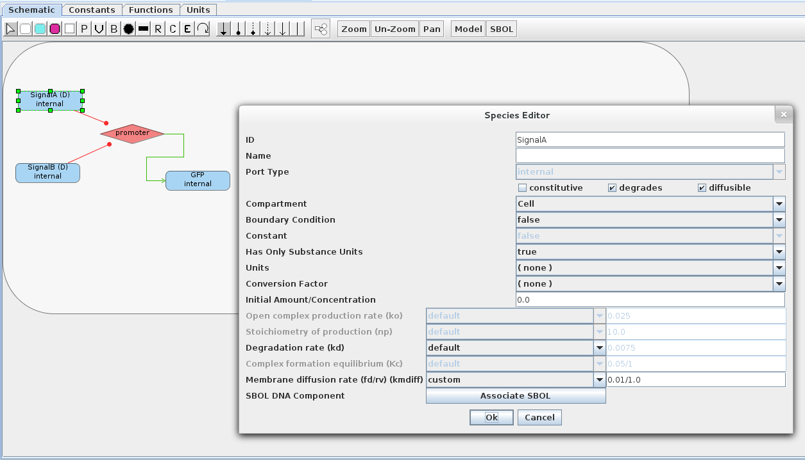
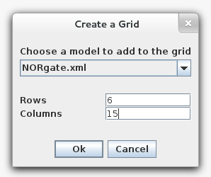
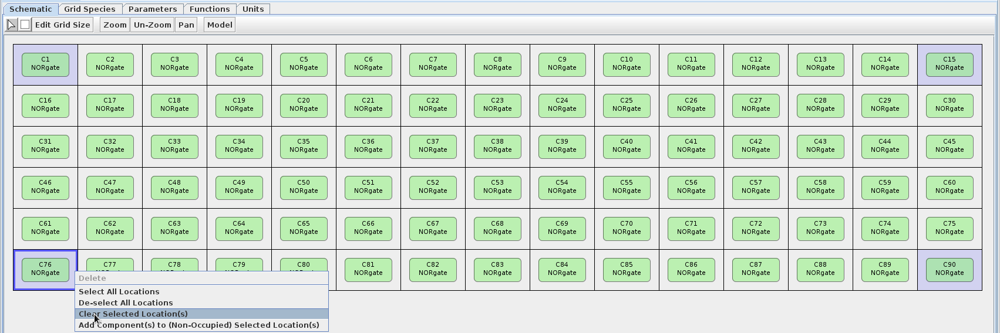
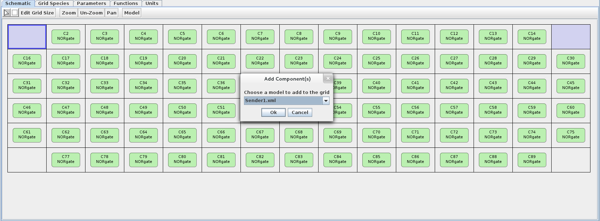
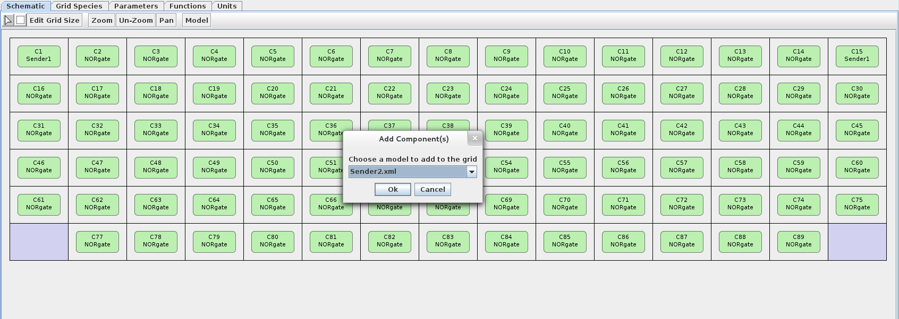
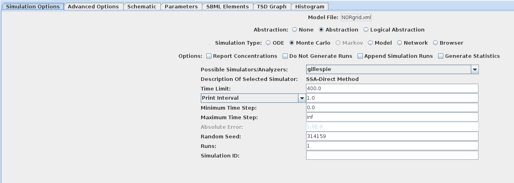
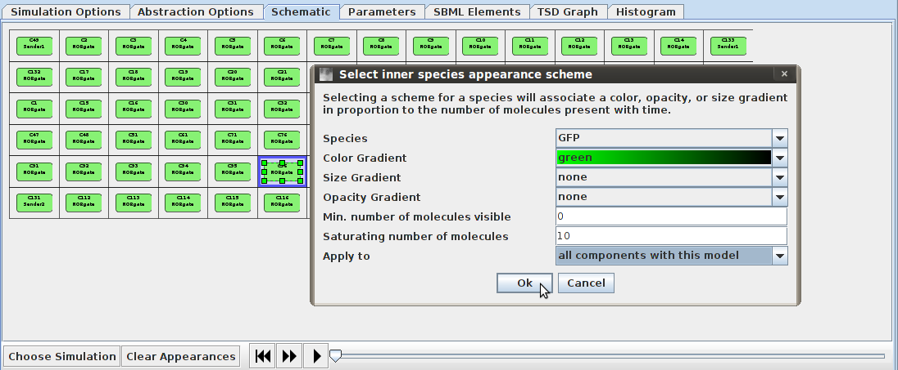
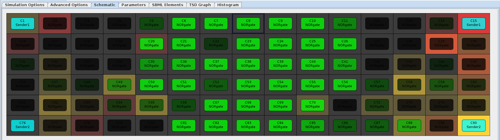

iBioSim Grid Tutorial
Jason Stevens
1 Introduction
This tutorial will step you through the process of creating a spatial grid model of a cell population using iBioSim. Before following this tutorial, please complete the basic iBioSim tutorial and read through the manual. Knowledge of some of the material discussed in those resources will be assumed.
2 Creating a Grid Component
A grid is a structure used for separating components spatially. So the first thing to do is create the components that will be placed onto the grid. This tutorial is going to use a multicellular circuit that will create a spatial NOR function. (For a similar NOR circuit that has been built and characterized, see Tamsir et. al 2011. For a collection of multicellular logic gates, see Regot et al. 2011.) A NOR gate gives an ON response when both inputs are OFF; otherwise the circuit is OFF. This circuit is comprised of three different cells types: two sender cells that create diffusible input species, and a cell that receives the inputs and makes the NOR computation.
- Below is the Sender 1 model. It contains two constitutive species, one which will act as an input (SignalA) and the other as an aesthetic reporter (CFP). Make sure that SignalA is marked as diffusible and degradable. Also, make sure that the model is enclosed in a compartment (uncheck the "Is Mapped to a Port" on the Compartment Editor). Finally, change the open complex production rate ko to 0.5 as shown below.

- For the Sender 2 model, create a model similar to Sender 1 that has a different name (e.g., SignalB) for the diffusible species.
- Below is the model for the NOR gate cell. At the left, you can see that two species repress a promoter that leads to production of a GFP species. If both of the repressing species are marked diffusible and given the same ID as the species in Sender 1/2 (e.g., SignalA/B), then membrane diffusion reactions will be created and any SignalA/B species can come into or diffuse out of the cell. If these species were not present or not marked diffusible, then no membrane diffusion reactions would be created. In the figure there is also a species panel which shows custom diffusion rate (0.01/1.0 for kmdiff) that should be used for both SignalA and SignalB. Also, on the Constants tab change the value of kecdiff to 0.01. Like Sender 1/2, this model needs to be enclosed in a compartment. Enclosing it in a compartment creates a virtual membrane, which species can be transported through via membrane diffusion reactions. (Note that membrane diffusion rates are taken from the inner species. The membrane diffusion rates for the Sender models are kept as default for the sake of simplicity.)

- The grid components are now done, so let's put them onto a grid!
3 Creating and Populating a Grid
- Create a grid model using the File → New → Grid Model menu, and name the new model as you wish. You will then be prompted to create a new grid. Make this grid 6 x 15 and fill it with the NOR gate model. After a moment, you will see a populated grid in the schematic. If the grid is too large to fit, you can zoom out by selecting the zoom button in the toolbar, or holding alt or control, and then using the mouse wheel (or whatever you use for vertical scroll).

- The grid now only contains the NOR gate model, so we need to add the Sender models to the grid as well. To do this, left-click on the four corners of the grid (they should appear light-blue if selected), then right-click and choose the "Clear Selected Location(s)" option. (Placing the Sender models at the corners will allow for a good demonstration of the NOR functionality.)

- Now let's add Sender 1 to the top two corners. De-select the bottom two corners (by single-clicking), then right-click and choose the Ädd Component(s) to Non-Occupied Selected Location(s)" option. Choose the Sender 1 model at the prompt.

- Now let's add Sender 2 to the bottom two corners. To demonstrate another way of adding components, select the component radio button on the toolbar (looks like a square). Left-click on one of the empty bottom two corners then choose the Sender 2 model at the prompt. Do the same for the remaining empty corner.

- The grid is now complete, so let's simulate it!
4 Simulating and Visualizing a Grid
- Simulating a grid model is no different than simulating a non-grid model. For my simulation run, I turned on abstraction, used Monte Carlo/Gillespie, and set a time limit of 400. When you've chosen your simulation options, click the little green play button on the top toolbar. This will generate the SBML and then simulate the model. Simulation should take under a minute with the options provided.

- When the simulation has finished, click on the Schematic tab. If the model is too large to fit on your screen, you can zoom out by holding control or alt and using the mouse wheel (or whatever you use for vertical scroll). Now click the "Choose Simulation" button and choose the simulation run you would like to use for playback (probably "Run-1.tsd").
- Now it's time to choose appearance schemes to maximize our ability to see what's happening during simulation playback. To alter a species' appearance, select its compartment or grid location by double-clicking (for occupied grid locations, double-click on the space outside of the compartment). A menu will then appear, allowing you to attach a color, size, and/or opacity gradient to the species. If you know the approximate molecule counts to expect, you can choose min/max species counts to specify the counts that correspond to either end of the gradient. Choose the following appearances (Color, Min:Max): Sender 1 CFP (Cyan, 0:20); Sender 2 CFP (Cyan, 0:20); NOR Gate GFP (Green, 0:10); Grid SignalA (Orange, 0:5); Grid SignalB (Red, 0:5). Be sure to change the Äpply To" option to all components/grid locations to make appearance selection a quick process. Using these appearances we can get a fairly good picture of the state of the system over time and can simultaneously see the species counts for all of the important species. You can save this scheme for later by clicking on the save button.

- The appearance scheme is now complete, so hit the play button and watch the circuit in action! You can drag the ticker around to see certain spots in the simulation, and if you'd like you can also zoom in/out and pan around while the simulation takes place. The simulation should show the behavior below. In the center, where the diffusible species don't reach well (i.e., where both inputs are OFF), there is GFP, indicating ON behavior; everywhere else (i.e., where either or both inputs are ON) there is no GFP, indicating OFF behavior. By changing diffusion rates and how much of the SignalA/B species are produced, you can tune how large the green spot in the middle will be.

- Hooray! You have now completed the grid tutorial. Hopefully this has given you a good sense of how to use iBioSim for static spatial modeling. If you have any questions, comments, suggestions, or issues, you can send an email to atacs-bugs@vlsigroup.ece.utah.edu. Be sure to include "BUG", "CHANGE", or "FEATURE" (even if it's a question) in the subject line or it will be marked as spam. Happy modeling!
File translated from
TEX
by
TTH,
version 3.81.
On 30 May 2013, 10:03.